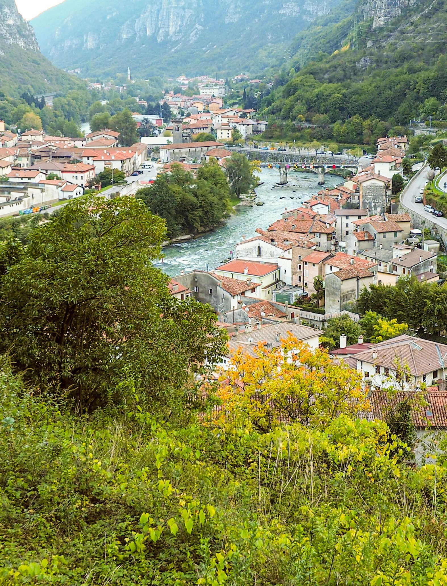

A walk and talk - visiting the terraces in Valstagna, Valbrenta, Veneto
International Terraced Landscapes Alliance Journal volume 2, issue 2, pp. 18–33 (2021) · Cite this article
- 156 views
- 141 downloads
- DOI10.5281/zenodo.8081222

Abstract
The following text deals with the logic of conversations taken place while visiting the different sites of the project Adopt a Terraced In the River Brenta Valley.
The purpose is to surface and exchange impressions, doubts, questions and feelings about the past and the future of the visible and not so visible implications of being part of a collective effort in restoring Terraced Landscapes. We would like to show different perspectives an actions in a way that moves beyond conventional development projects. We will first briefly present the asssociation Adopt a Terrace followed by a narrative constructed by a series of insights that emerged from the sites of the route of our journey.
Keywords
- CSO
- dry stone walling
- recovery of landscape
- art on the terraces
- peasant laboratory
Introduction
In November 2021 Cinzia Zonta, the President of the Association “Adopt a terraced landscape in Canale di Brenta”, Timmi Tillmann and Maruja Salas from ITLA (International Terraced Landscapes Alliance) gathered for a few days in Valstagna, which is located in Valbrenta (Figure 1). We visited the terraces and exchanged impressions, memories of places as well as talked about how to keep this initiative in a flow of significant processes that started twelve years ago. We discussed the possibility of organising a past, present and future laboratory, and the first step of the laboratory was organised by the Association in October 2022.
‘Adopt a terrace’ and terraced landscapes in Valbrenta
The project ‘Adopt a terrace’ was launched in 2010 to support the maintenance and recovery of the terraced landscapes in Valbrenta on the initiative of the University of Padua. The Municipality of Valstagna (now Valbrenta) and the Italian Alpine Club stimulated the constitution of the Association ‘Adopt a terraced landscape in Canale di Brenta’. The municipality acting as intermediaries between the owners of the terraces, who migrated abroad or local persons, who have abandoned them, and the Association assuming the organization of the mountain lovers willing to take care of the terraces. The initiative was established after the first experiences of spontaneous ‘adoption’ of terraces aiming at expanding this activity, facilitating anyone to adopt a terrace and in this way supporting the sustainability of the mountainous terraced landscape of the Canale di Brenta.
The initiative followed the natural continuation of the study and territorial animation, activity initiated by the valley administrations (municipalities of Valstagna, Solagna, Campolongo, S.Nazario and Cismon del Grappa) in collaboration with the University of Padua, the IUAV University of Venice and the Region Veneto Region in the framework of the European project ‘ALPTER, terraced landscapes of the Alpine arc* (2005 see website www.alpter.net).
Since 2018 ‘Adopt a terrace in Canale di Brenta’ has become an Association of Social Promotion (APS) recognized in the National Register of Associations. This recognition ratifies the stable role it plays in Valbrenta for supporting the recovery and reuse of abandoned terraces. The Association has been gradually expanding its activities, such as training courses for dry stone walling and cultural projects, always pursuing the conservation of the terraced landscapes.
Whoever crosses the Brenta Canal today by car or train, if they look towards the mountain slopes, one is amazed by the terraces that rise to more than 500 meters above sea level. From the 17th century until the mid-20th century, this valley was characterized by the cultivation of tobacco, which gave the slopes a unique landscape in terms of the impressive extension of the terraces.
The terraces transformed the steep mountain slopes into a series of platforms to areas suitable for cultivation. The retaining walls of the terraced levels are called masiére* (from the Latin ‘maceries’, heaps of stones) and are made of dry stone (without the use of lime or cement). A masière can reach a height of up to 7 meters, has two layers of stones interlocked with each other, and has a layer of earth and pebbles behind it that allows rainwater to filter through.
Since the Second World War, the maintenance of the terraces has declined, with the collapse of the tobacco cultivation, which was too labour-intensive. Today the terraces show the consequences of a long period of neglect, they are covered by forest and subject to collapse. Of the heritage of 230 km of dry-stone walls in the valley, more than 60 % are in ruins.
Today, only those terraces close to the houses are still used as private gardens. Horticultural crops (potatoes and beans, as well as small fruits) give quality results here and the magnesium-rich soil makes the vegetables tasty. This is the work of the Adopt-a-Terrace Association.
We started to walk in San Marino
The autumn light accompanies us. We start our journey at the cemetery of the commune of San Marino. At the entrance there is a water fountain with two tubs, one with plenty of drinking water and the other is dry. Cinzia tells us that the channel that connects to the spring is clogged, and she adds with concern that no one knows how to repair or perhaps nobody feels responsible for repairing it.
Behind the cemetery we see the terraces cleared of weeds and shrubs as we pass along a narrow path, “all this is a group effort of the Association” says Cinzia and adds, “this contrast with the spaces where the owners of the terraces leave all tangled up, demonstrating that they have no feelings for the landscape”. We share her disappointment.
When we approach the cleared terraces, we feel a great enjoyment and hope. To see the terraced fields opened to the regeneration of biodiversity, berries, bushes with ripening pomegranates, an ancient and majestic pear tree, robust grasses and herbs... hundreds of species per square metre (Figure 2). We are charmed by the dry-stone walls constructed in different times and styles that blend in an original telluric dynamic and that Agroecology is a feasible transformation.
From Sasso Stefani to San Gaetano
We cross to the village in front, named “Sasso Stefani” after the patron saint of the village, whose feast is celebrated on December 26th.
From here we can see the old house that Cinzia and her husband Ale have bought. The terraces standing firm on bare dry-stone walls impress for the beauty and perfection and it triggers memories of past and maybe better times of rural life. We see a couple of young beekeepers, who have come from Padua to settle in the village (Figure 3). They use the flat area of the terraces to place the bee boxes. This is a new way to use the terraces that might evolve in further forms of generating complementary activities for attracting young people to the rural life. In contrast the abandoned terraces, where the stones are spread give a sad and discouraging picture of dismantled expectations.
The terraced slope is marked by three water wells arranged parallel to each other at different heights. Cinzia reflects: “These are traces of the agricultural technology of the tobacco plantations of 200 years ago. We wonder if anyone knows how they worked and how to awaken the research interest in following the historical traces of water management, since this is an area of an important underground water natural reserve from the Alpine Region”. Continuing our walk, we enter an area where several family houses have been restored. We greet the master stonemason at the door of his house, proud to live surrounded by terraces and to have a profession that gives him dignity.
We continue climbing and arrive at a place where we find ourselves in front of a magnificent arch that fits precisely into a wall. We enter and feel we are in a “cave” of curiosities. We find objects from past times, lamps, tools, swords, ornaments, sometimes carefully placed on the stones, or else piled up as if any intention of interpretation would be acceptable. At the back of the cave, almost hidden, is a deep stone niche. We wonder if this is one more puzzling element of an underground dry water channel (Figure 4).
Many houses are for sale on the following section of the village. Elegant mansions that housed large families as well as modest houses where peasants lived, dedicated to drying tobacco, raising pigeons, cultivating orchards and fruit trees. We ask ourselves, what are the conditions for an awakening of the will and knowledge of the local people to engage in a creative process of clearing the terraces and revive rural life with human quality? Development Projects? Subsidizing rural lifestyles?
We arrived in San Gaetano. “My grandfather’s family was from here, Cinzia tells us, those times children and women had to migrate to Sicily during the war and then to Piedmont. But life called them to return”.
Subiolo Bridge
This is the area of terraces converted into experimental fields of the Association. Tommaso oversees teaching and practicing the art and craft to build walls to all persons that show interest and discipline to achieve a technical promising qualification (Figure 5).
Continuing along the route, Cinzia invites us to discover the saffron (Crocus sativus) that grows as if hidden among the natural vegetation (Figure 6). Even though it is after early morning, we still find some plants and pick the lilac-coloured flowers by hand, with great care. They contain the stigmas, part of the pistil, which is harvested and dried to obtain one of the most expensive and sought-after species for gastronomy. Is this a trend to follow? We look at each other with a big question mark.
The terraces continue to stand upright, and when they are cleared, stonewalls facing the sunshine, some for their width, others for their staggered narrowness one can easily imagine these terraces with a great diversity of crops transformed into orchards of healthy, sovereign food. We agree that this is a matter to consult the various people who are part of the Association, which at this point involves multiple actors like villagers, architects, teachers, economists, craftsmen, anthropologists, musicians, artists. We coincide that what needed is different ways to unleash visionary processes to revitalise sustainable local structures of the region and commit to accomplish them.
Tobacco Road
Walking along the Tobacco Road in the upper part of Valstagna, we come across the fusion of art and nature. Sometimes in dazzling symbiosis, suggestive amalgams, at other times, abandoned remains of art transformed by to the erosion of time. We talk about the complexity of possible transformations and the range of possibilities open between action and inaction, between stimulating the imagination and exercising intentional planning. We ask ourselves how to re-create in these spaces that still hidden beauty, how to awaken illusions of practising full lifestyles with unsuspected qualities. We would have to rethink the conventional terrace model – monocultural plantation with a mercantile orientation – to stop endangering the continuity of life in the region by destroying the mountain ecosystem. We would have to go beyond the typical alternative use of the terraced landscape – entertainment scheme for an urban demand – combining many forms of visual enjoyment with the sense of dignity of those who love these territories as their homelands (Figure 7).
Thinking of processes of transformation invite us to bring together many plural voices and unleash synergies of reformulation of the knowledge of water, of ecological crops that nourish group intelligence and create new symbols in connection to the land.
Herbal terraces in Londa
We arrive to the terraces adopted by Marco: a communication knot showing the value of mutual help between neighbours who live for many generations and newcomers who are committed in keeping the terraces productive (Figure 8). The terraces are a point of encounter for old memories and ways of knowing where dreams and visions seem to be possible. Stonewalls raised in a human scale, the air perfumed by Mentha Piperita, Artemisia Absinthium, Origanum Mayorana, Verbena Olorosa, Lavandula Angustifolia, growing willingly, attracting insects, nourish biodiversity beneficial to the environment and contribute to human health processed in oils, tinctures, herbal teas or condiments. One feels strengthened in the spiritual attachment to the earth and a strong solidarity between human beings. We imagine that the inclination to maintain the terraces in family property will increase fruitful diverse gardens of herbs and crops for the generations to come. A chance to harmonize life with water, earth, stones, humans and nature coexisting in many creative and perpetual mutual transformations.
Reflection and perspectives
With these thoughts of sustainable transformations of the terraced landscapes we begin to imagine interactive possibilities of collection of group ideas and actions to face jointly the coming challenges of next years, naming this process Peasant Laboratory. This means, to call upon meeting points of different forms of knowing, including persons engaged in sharing their practices in agricultural terraced landscapes following an historical and cultural line of reflection based on life experiences of the past, present and future.
The first (October 14th) and the second (December 17th) encounter have taken place in Valbrenta dealing with the main themes:
• Agriculture and landscape terracing; • The knowledge of terracing; • The culture of terraced agriculture.
The first event, related with the past, started with locating historical names of places on the cartographic map of Valbrenta’s terraced territory (Figure 9). Another point of reflection was depicted in a mental map constructed with local terms that generated great insights about the meaning of the art of terraces gravitating in the still existing vocabulary of the venetian language (Figure 10). An annual agricultural calendar including the seasons, main phases of work synthesized in inspiring graphical art the knowledge of the agricultural life cycles. Finally, a drawing of the former life on the terraces done by a generations’ mix triggered reflections about ideas oof the past that can be recreated in the future.
The second session of the Peasant Laboratory yielded a stronger awareness of topics that still are significant in the present that cannot be overseen to plan the future of the terraces (Figure 11). This third event about the future and the decision on action on the terraces of Valbrenta will be held in the next months.
Rights and permissions
Open Access. This article is licensed under a Creative Commons CC BY 4.0 license, which permits use, sharing, adaptation, distribution and reproduction in any medium or format, as long as you give appropriate credit to the original author(s) and the source and indicate if changes were made.
About this article
Cite this article
Salas, M., & Zonta, C. (2021). A walk and talk - visiting the terraces in Valstagna, Valbrenta, Veneto. International Terraced Landscapes Alliance Journal, 2(2), 18–33. https://doi.org/10.5281/zenodo.8081222
- Published
- December 2021
- Issue
- Volume 2, Number 2
- Journal
- International Terraced Landscapes Alliance Journal, ISSN 2754-7639 (Online)
- Archive
- Zenodo record 8081222
- CSO
- dry stone walling
- recovery of landscape
- art on the terraces
- peasant laboratory